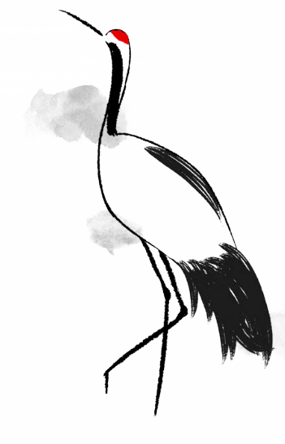

EvalMonk
The observability, evals, and guardrails platform that AI agents install on themselves.
Three layers.
One SDK.
Production agents need observability, evaluation, and guardrails — all running together, sharing context. EvalMonk delivers all three through one decorator-based SDK and one unified dashboard.
Trace every action your agent takes.
Distributed tracing across prompts, tool calls, retrievals, and sub-agent invocations. Token-level cost and latency on every node. Drift detection on outputs, refusal rates, and tool selection — live.
Score every output against your rubric.
Custom rubrics, golden datasets, LLM-as-judge with bias mitigation, and human review — running on every prompt change, model swap, and PR. Side-by-side and shadow-mode evals on real production traffic.
Block prompt injection at the edge.
Multi-layer defense — pattern, classifier, and LLM-judge in pipeline — against injection, jailbreaks, PII leakage, and policy violations. Compose policies in plain language; deploy them like code.
Most production agents fail silently. The model is confident, the logs are quiet, and the failure surfaces only when a customer notices.
Prompts you can't measure
You change one line and ship. No baseline, no diff, no signal until a customer complains. Prompt engineering becomes guesswork instead of iteration.
Failures you can't see
Hallucinations, tool misuse, stale retrievals, runaway token spend. Your APM stack was built for HTTP requests, not for reasoning chains across multiple models and tools.
Adversaries you can't predict
One crafted prompt extracts your system message. Another exfiltrates user data. WAFs don't understand intent — and a generic LLM has no notion of what it's allowed to do for your domain.
The reliability stack,
one SDK away.
Three deeply integrated systems sharing one trace context. Wrap a function with one decorator and you get observability, evaluation, and guardrails — without four point solutions and three dashboards.
Trace the entire agent, not just the call.
EvalMonk reconstructs every agent run as a navigable tree of prompts, tool invocations, retrievals, and sub-agent calls — with token-level cost and latency on every node.
- Distributed tracing across multi-step, multi-tool, multi-model workflows
- Live drift detection on output distributions, refusal rates, and tool-selection patterns
- Replay any production trace against a new prompt or model in one click
- Native SDKs for Python, TypeScript, Go — and OpenTelemetry for the rest
Stop guessing whether a prompt is better.
Define what "good" means for your domain — once. Then run every prompt change, model swap, and config tweak against your rubric, your golden set, and your LLM judges. Every regression becomes visible before it ships.
- Custom rubrics with weighted criteria, free-form, or structured scoring
- LLM-as-judge with bias mitigation and human-in-the-loop calibration
- Side-by-side A/B and shadow-mode evaluation in production traffic
- CI integration — every PR gets an eval report before review
Block prompt injection at the edge.
Every input and output is classified in milliseconds against a layered defense — prompt-injection detection, policy enforcement, PII redaction, and domain-specific guardrails you compose yourself.
- Multi-layer defense: pattern, classifier, and LLM-judge in pipeline
- Adversarial corpus continually updated from real-world attacks
- Compose policies in plain language; version, test, and deploy them like code
- Block, redact, route to human, or fail-closed — your choice, per policy
Send your agent to EvalMonk.
EvalMonk is built so AI agents can install and operate it themselves. Paste this prompt to any coding agent — Claude Code, Cursor, Cline, your own — and it reads the docs, instruments its own functions, generates a starter eval suite from real traces, and reports back. No human in the loop required.
It reads the integration guide
The skill.md describes the SDK, the trace schema, the decorator API, and the policy DSL. Your agent ingests it like documentation.
It instruments its own code
Wraps tool calls and agent entrypoints with @observe and @guard. Generates a starter eval suite from a sample of your real production traces.
It improves itself over time
Reads its own traces, identifies regression patterns, proposes new evals, and opens PRs with suggested prompt and policy changes — reviewed by you.
From first trace to
confident release.
Four steps. The same path teams take to move from "it works on my laptop" to "it serves a million users at 3 a.m. without paging anyone."
Instrument
Your agent (or you) wraps entrypoints with @observe. Every run becomes a structured trace — no schema gymnastics, no logging boilerplate.
Observe
Watch real traffic. Surface failure modes, output drift, latency outliers, and cost spikes. Build a library of failures worth fixing.
Evaluate
Promote real traces into golden datasets. Define rubrics in plain language. CI runs them on every prompt change, automatically.
Safeguard
Compose policies. Deploy guardrails. Block injection and jailbreaks before they touch your model. Sleep through the weekend.
Wrap once.
See everything.
EvalMonk fits inside the agent you already shipped. Two decorators turn a function into a fully traced, evaluated, and guarded entrypoint. Native SDKs for Python, TypeScript, and Go — OpenTelemetry for everything else.
Read the docs
The next generation of AI agents won't be evaluated by their developers.
They'll evaluate themselves.
Start tracing in four minutes.
Free for the first 100,000 traces a month. No credit card. Two lines of code, or one prompt to your agent.